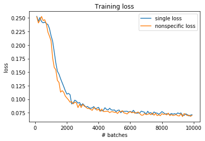

Autoencoder with feedback controlled ReLu slope on MNIST
Setup
The setup in this experiment is largely the same as the one described in the previous experiment.
While previously each node in E1 received feedback only from its direct counterpart in D1, the feedback in this experiment is "less specific", i.e.
every node in E1 now receives (weighted) feedback from every node in D1.
Results
In the following figures, the loss over time from the modified model is compared with the single loss function model of the previous experiment.

>